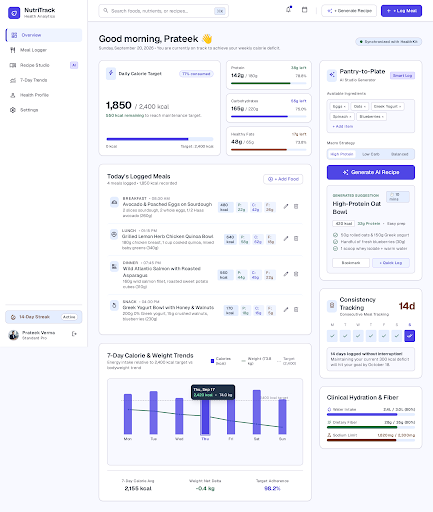
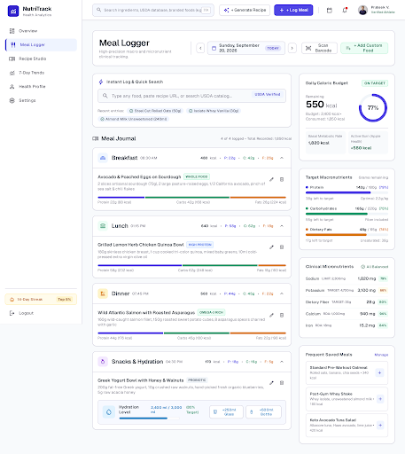
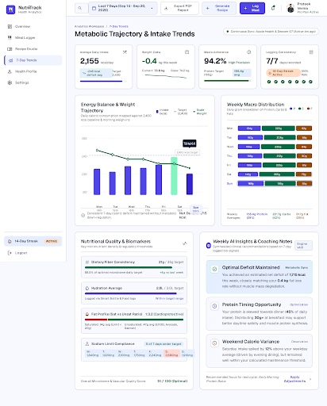
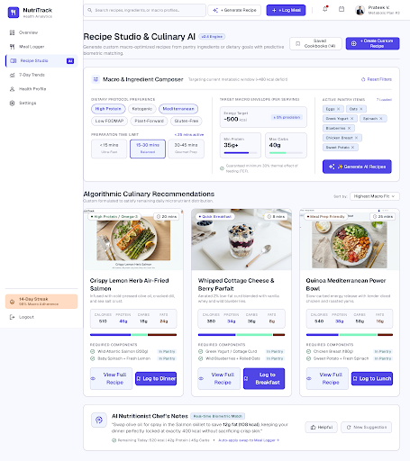
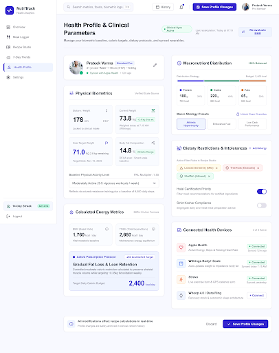
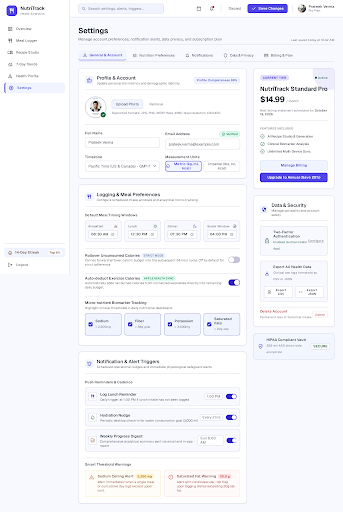

Nutritional Intelligence Design System & Workspace
High-fidelity screens crafted with the Nutritional Intelligence system.

Daily calorie budget, macro breakdown ring, meal breakdown cards, and biometric trends.

Multi-nutrient logging stream, barcode scanning mockups, portion controls, and micronutrient calculations.

Weekly caloric adherence, macronutrient balance over time, body weight correlation, and analytical insights.

AI recipe generator, macro-targeted culinary builder, ingredient substitution engine, and meal prep optimizer.

BMR & TDEE calculators, goal presets (Lean Bulk, Cutting, Maintenance), dietary restrictions, and biometric targets.

Wearable sensor integrations, notifications & meal reminders, unit preferences, data exports, and privacy toggles.